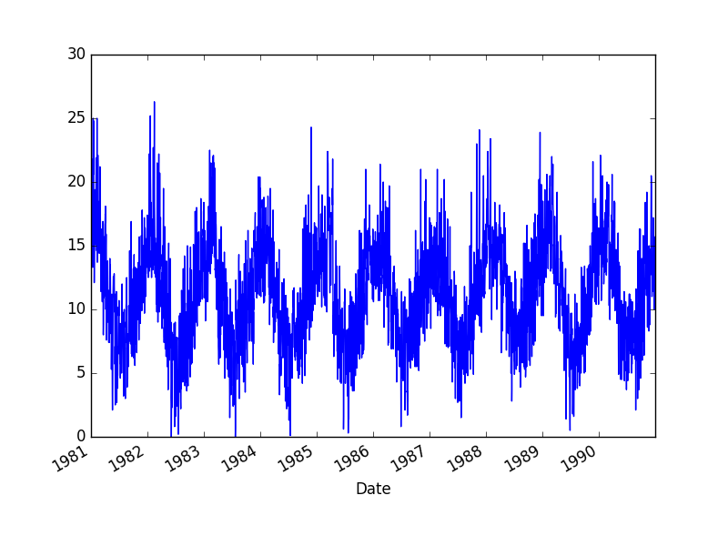
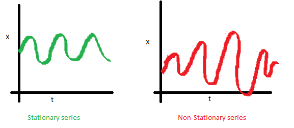
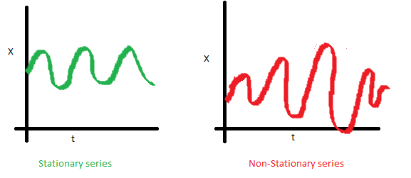
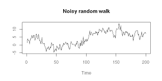

Time Series Analysis
by
Siavash Kavousi
Sadegh Mahmoudpour
Outline
Introduction
Patterns
Models
Outline
Introduction
Patterns
Models
A time series is a ...
series of data points indexed (or listed or graphed) in time order
Minimum daily temperature
Application of time series analysis
- Economic Forecasting
- Sales Forecasting
- Stock Market Analysis
Data types
- Cross sectional data
- Time series data
- Panel data
Time series data
- Sequence of data points where order indicates successive measurements over time
- In a time series data set, the time data field makes one data record unique from the other records
Outline
Introduction
Patterns
Models
Time Series Patterns
- Trend
- Seasonal
- Cyclical
- Random
Trend
a long term pattern
value at time t which is regressed on a time trend
$Y_t = α + βt + ε_t$
Seasonal
a pattern in a frequency of occurrence -> within a year or even shorter
Cyclical
like seasonal a repeated pattern but beyond a frequency of one year
Random
no particular pattern
value at time t is regressed on the last period's value
$Y_t$ = last period value + error(noise)
$Y_t = Y_{t-1} + ε_t$
Outline
Introduction
Patterns
Models
Time series modeling
- Stationary series
- Non-stationary series
Stationary series
 

Transformation
stationarizing the series
Different Time Series Processes
- White Noise
- AutoRegressive Model
- Moving Average Model
- AutoRegressive Moving Average Model
White Noise
It is purely random
AutoRegressive Model
An AR model is one in which Yt depends only on its own past values Yt-1, Yt-2, Yt-3, etc
AR(p): Yt = Β0 + Β1 Yt-1 + Β2 Yt-2 + ... + Βp Yt-p
Moving Average Model
A technique to remove the fine-grained variation between time steps
The hope of smoothing is to remove noise and better expose the signal of the underlying causal processes
AutoRegressive Moving Average Model
There are situations where the time series may be represented as a mix of both AR and MA models referred as ARMA
Time Series Prediction using MLP
prediction as a regression problem!
"Month","International airline passengers: monthly totals in thousands. Jan 49 ? Dec 60"
"1949-01",112
"1949-02",118
"1949-03",132
"1949-04",129
"1949-05",121
Shift and concat
X Y
112 118
118 132
132 129
129 121
121 135
Train and Validation using Keras
model = Sequential()
model.add(Dense(8, input_dim=look_back, activation='sigmoid'))
model.add(Dense(1))
model.compile(loss='mean_squared_error', optimizer='adam')
model.fit(trainX, trainY, epochs=200, batch_size=2, verbose=2)